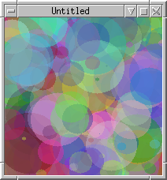

Extensions available
The following is a list of extensions available inside the Jim core distribution. Note that any pure-Tcl extension may be compiled statically into the core while most C extensions may be compiled either statically or as loadable modules.
- aio
- ANSI I/O, including open and socket
-
This core extension provides an object-based interfaces to file and socket I/O. In addition to regular file I/O it support UDP, IPv6 and Unix domain sockets on supported systems. Combined with the tclcompat extension, it provides Tcl-compatible I/O.
- tclcompat
- Tcl compatible read, gets, puts, parray, case, try, …
-
A pure-Tcl extension which provides maximum Tcl compatibility
- eventloop
- after, vwait, update, fileevent
-
This extension provides a Tcl-compatible event loop.
- array
- Tcl-compatible array command
- clock
- Tcl-compatible clock command
- exec
- Tcl-compatible exec command
- file
- Tcl-compatible file command
- glob
- Tcl-compatible glob command
- package
- Package management with the package command
- load
- Load binary extensions at runtime
- posix
- Posix APIs including os.fork, os.wait, pid
- regexp
- Tcl-compatible regexp, regsub commands
-
Either the system-supplied POSIX regex (for minimal size) or the Jim-supplied regex (for maximum compatibility) may be selected.
- signal
- POSIX Signal handling
- syslog
- POSIX System logging with syslog
- oo
- Jim OO extension
-
A pure-Tcl extension to provide Object-Oriented support. See OO Extension for more information.
- tree
- Pure-Tcl OO tree structure, similar to tcllib ::struct::tree
- readline, rlprompt
- Interface to libreadline (deprecated in favour of the built-in line editing)
- sqlite3
- Interface to sqlite. See Sqlite Extension for more information.
- metakit
- Interface to metakit. See Metakit Extension for more information.
- sdl
- SDL bindings for 2D graphics, with SDL_Glx primitives.
-
Currently experimental, but some GLX primitive are supported. This is an example script:
-
package require sdl set xres 200 set yres 200 set s [sdl.screen $xres $yres] set i 0 while 1 { set x1 [rand $xres] set y1 [rand $yres] set x2 [rand $xres] set y2 [rand $yres] set rad [rand 40] set r [rand 256] set g [rand 256] set b [rand 256] $s fcircle $x1 $y1 $rad $r $g $b 100 incr i if {$i > 2000} {$s flip} if {$i == 3000} exit } -

- win32
- Experimental interface to win32
-
. info commands win32.* win32.GetVersion win32.GetModuleFileName win32.GetUserName win32.GetActiveWindow win32.GetCursor win32.FreeLibrary win32.SetCursor win32.LoadLibrary win32.GetCursorPos win32.GetCursorInfo win32.ShellExecute win32.GetComputerName win32.GetModuleHandle win32.SetCursorPos win32.CloseWindow win32.GetSystemTime win32.GetTickCount win32.SetActiveWindow win32.Beep win32.FindWindow win32.CreateWindow win32.SetForegroundWindow win32.SetComputerName win32.LoadCursor